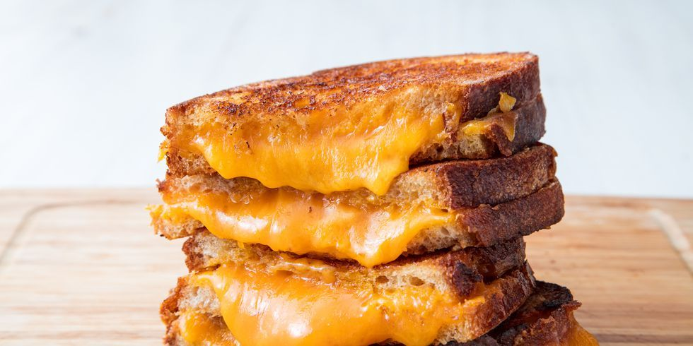

Grilled Cheese... quick and easy!

Description:
Bread, cheese, fried with butter. It ain't much but it works.
Ingredients:
- 1 tablespoon butter, softened
- 2 slices bread
- 2 slices sharp Cheddar cheese
- 1 tablespoon chopped parsley
- 1 teaspoon chopped basil
- 1 teaspoon oregano
- 1 teaspoon chopped fresh rosemary
- 1 teaspoon chopped fresh dill
Steps:
- Spread 1/2 tablespoon of butter on one side of each piece of bread. Lie the slices of Cheddar on one of the slices of bread on the unbuttered side. Sprinkle the parsley, basil, oregano, rosemary, and dill on the other slice of bread on its unbuttered side. Sandwich the two slices of bread together with the buttered sides facing outwards.
- Heat a skillet over medium heat. When skillet is hot, gently lie the sandwich in the skillet; cook on each side for 3 minutes until cheese has melted
Nutrition Facts:
Per Serving
- 471 calories
- 18.4g protein
- 27.4g carbohydrates
- 32.2g fat
- 90.1mg cholesterol
- 777.3mg sodium